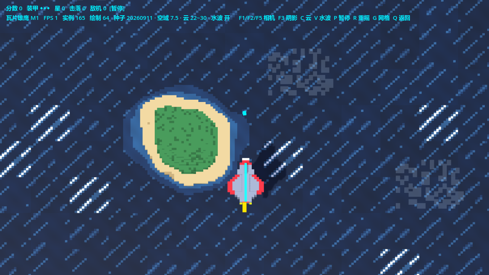
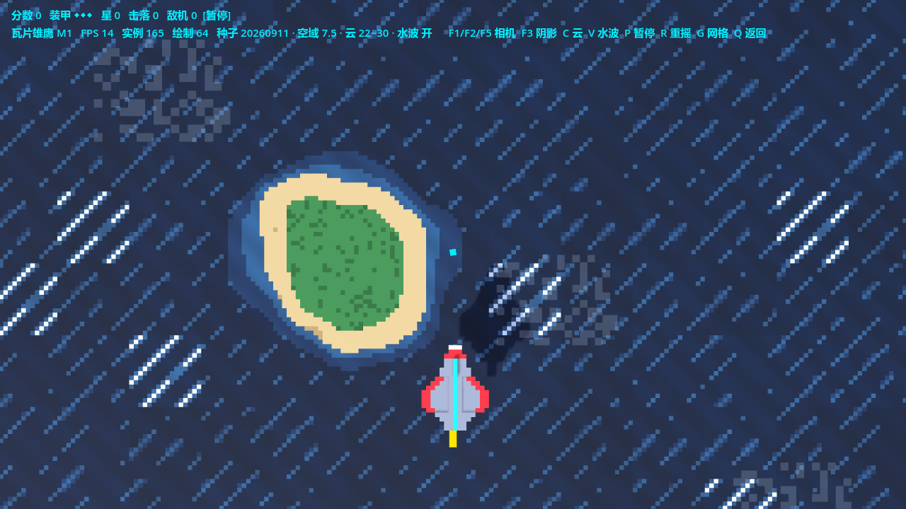
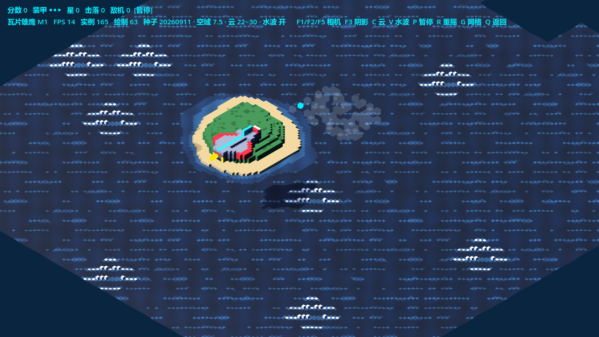
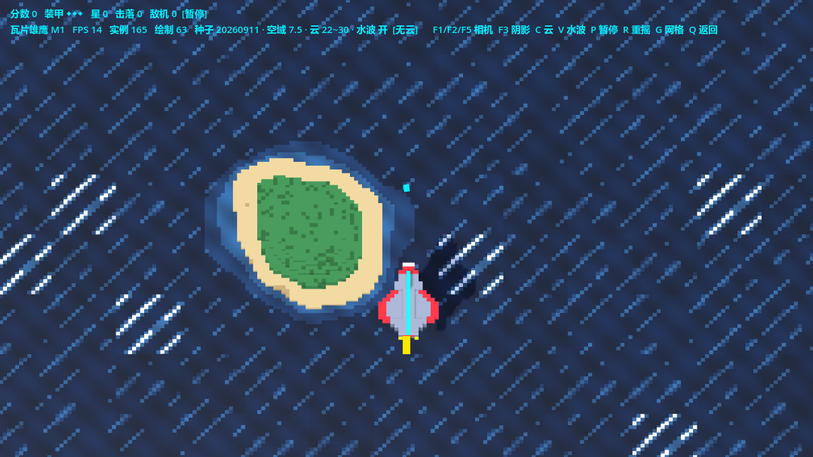
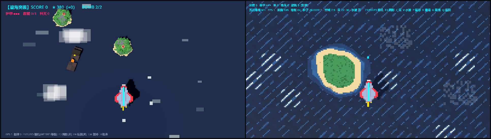
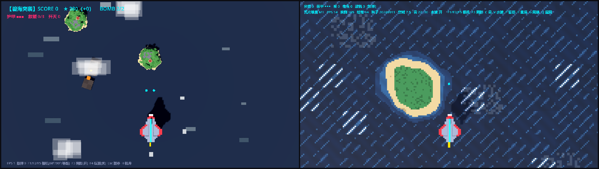
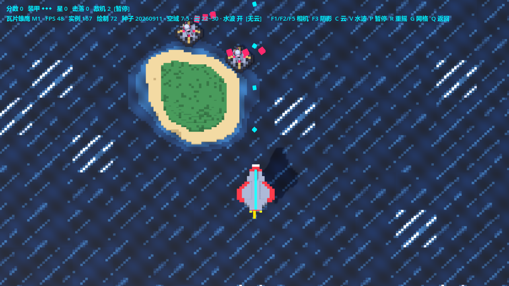
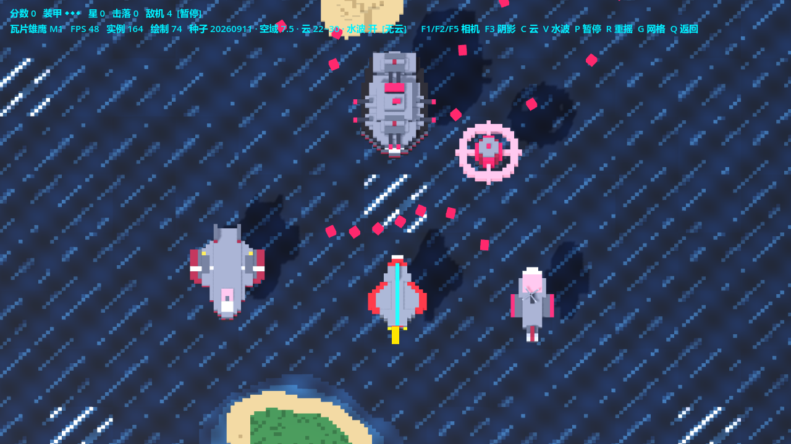
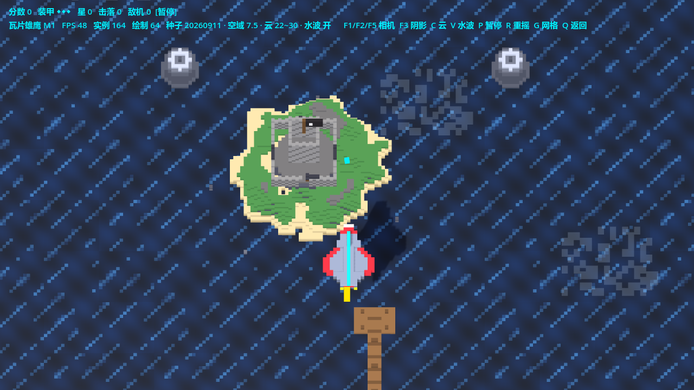

方块雄鹰的「瓦片表现形式」对照重制版 · 先交付一个可飞行的滚动走廊小场景验证观感
《方块雄鹰》的「体素表现形式」实际由两部分组成，两者的改造价值完全不同：
| 表现层组成 | 现状 | 瓦片雄鹰的处理 |
|---|---|---|
| 地貌与海面（海面 plane + 46 波浪块 + 程序化岛/礁/沉船 + 随机撒点） | 伪瓦片：小块程序化拼装，回绕时重摇位置 → 不可复现、不可设计、绘制提交 ~87 次 | ✓ 全部瓦片化：行式瓦片走廊（本方案主体） |
| 战斗单位（玩家机 / Boss / E1~E10） | 已是 MagicaVoxel .vox 资产（spec 管线产出），与地貌的表现范式无关 |
✓ 原样复用 units/*.vox，不做瓦片化 |
specs/ 管线的
「换 silhouette」纪律全部失效。本方案默认按上表执行：瓦片只落在地貌走廊，单位保持 .vox 资产。
若需求方坚持单位瓦片化，请先看 §12 待确认项，那是一个量级完全不同的工作。
| 维度 | 方块雄鹰（保留） | 瓦片雄鹰（新建） |
|---|---|---|
| 代码 | game.gd ~1800 行单文件，一行不改 | 全新 scripts/tile_eagle/，按瓦片架构干净起步 |
| 地貌 | 程序化小块 + 随机撒点（伪瓦片） | 瓦片本体 + 排布表 + 实例化渲染 |
| 单位 | units/*.vox | 同一批资产，直接复用 |
| 定位 | 正式交付内容（3 关 / Boss / 存档） | 表现形式对照实验田：M0~M1 先验证观感与性能，效果确立后再补内容 |
两作并存的价值：同一台相机（正交 34 / 68°）、同一套色板、同一批单位资产下， 唯一变量是地貌表现形式——对照实验的控制变量法，这正是「保留原作」的意义。
评估文档 §6 要求「开工前必须定死的三个数」，此处直接拍板并登记为工程约定（M0 落地时同步写入 tools/vox/README.md）：
| 项 | 拍板值 | 落地方式 |
|---|---|---|
| 瓦片边长 | 16 体素 = 4.8 世界单位（体素缩放 0.3 不动） | 走廊 13 列 × 4.8 = 62.4（覆盖正交 34 视野宽 60.44）；体素网格跨瓦片严格连续 |
| 锚点 | 瓦片实例以底面中心落位（x/z 居中、y=底面） | 不改 voxel_model.gd 的 AABB 居中逻辑（单位/幸存者/地形全共用，改了波及全部既有资产）；
瓦片加载侧按 mesh.get_aabb() 反推偏移，把底面抬到 y=0（见 §6.3） |
| 北向与旋转 | vox +Y = 游戏 -Z（远端/前进方向）；rot ∈ {0,90,180,270}，不承担镜像；镜像瓦片须 flip 标志并翻转三角面绕序 |
排布表字段 {tile_id, col, rot, flip}；flip 绕序翻转在瓦片加载侧实现 |
| 材质 | 沿用 VoxelModel.shaded_material() 体系（GL Compatibility 安全，metallic 陷阱已记录） |
全部瓦片共享同一份材质实例（修掉旧版「每摆件 new 一份材质」的重复） |
| 层 | 职责 | 实现载体（M0） |
|---|---|---|
| ① 瓦片本体 | 单块 16×16 体素网格资产（海面/礁/沙洲/草岛…） | assets/vox/tiles/*.vox，由 tools/vox/gen_tiles.py 程序化产出 |
| ② 排布层 | 「哪一行、哪一列、放哪块瓦片、转多少度」的数据表 | layout.gd：行式表 + 段落生成器 + 图章，种子可复现 |
| ③ 渲染层 | 实例化绘制 + 滚动 + 行回收 | 按瓦片种类的 MultiMeshInstance3D 组 + 行回绕调度 |
《方块雄鹰》的世界本就是一条沿 Z 滚动的走廊（对象滚出后回绕）——瓦片版把它显式化成 「行（row）→ 瓦片列表」的映射：世界按行深 4.8 切成行，每行 13 列瓦片； 视野内 48 行（循环长度 48 × 4.8 = 230.4，与旧版回绕跨度 224~230 同量级）， 最远一行滚入视野时按排布表生成、最近一行滚出后回收复用。
TileEagle (Node3D, game.gd) ├─ WorldEnv (WorldEnvironment: 深蓝雾) # 参数照抄方块雄鹰 _build_env ├─ Sun (DirectionalLight3D, 阴影开) # 方向与旧版一致（-52°,-28°） ├─ Camera (Camera3D: 正交 34, 68°/90°/等距 F1/F2/F5) ├─ World (Node3D) # 整体 +Z 滚动（速度 7.0） │ └─ TileField (Node3D) # 瓦片渲染层 │ ├─ MM_sea_a (MultiMeshInstance3D) # 每种瓦片一个 MultiMesh │ ├─ MM_sea_b … # 实例数 = 该种瓦片当前在场数量 │ └─ MM_isle_grass … ├─ Player (Node3D + player.vox 网格) # 复用 units/player.vox ├─ HUD (CanvasLayer) # FPS / 瓦片实例数 / 绘制提交数 / 调试提示 └─ (M1+: PlayerBullets / AirUnits / Fx / …)
world.position.z += spd·Δ），玩家固定 z≈0。
瓦片实例的 local transform 不随帧变化——只有行回绕瞬间重写一行实例的 Z。这让渲染层每帧成本接近零，
与旧版「逐对象每帧回绕判定 + 重摇」形成鲜明对照。
瓦片本体分两类，产出管线分开演进：
| 类型 | 典型瓦片 | M0 产出方式 | 后续演进 |
|---|---|---|---|
| 噪声/色带型（海面、浪纹、沙洲） | sea_a/b/c、sea_crest、shoal | gen_tiles.py 程序化：value_noise + 颜色分带（复用 gen_pirate.py 的成熟手法与踩坑结论：单层水面靠颜色分带、浪尖极少抬起一格） |
不需要 spec 化——噪声范式没有「结构」可声明 |
| 结构型（礁石、草岛、沙缘，M2 的码头/要塞） | reef_s、isle_grass、isle_sand | M0 仍程序化（十几行 stamp 函数足够） | M2 结构瓦片批量扩充时，另立 terrain schema（from voxspec import _op_* 共用 op、不共用单位校验） |
这是评估文档 §9「共用 op 实现、不共用校验与 schema」精神在时序上的落实： M0 的目标是最快看到瓦片走廊观感，为 8 块瓦片先搭 spec 编译器属于本末倒置； 但 M2 起结构瓦片数量增长，届时 spec 化的收益才成立。
| tile_id | 体素尺寸 | 内容 | 对称性 | 参考色 |
|---|---|---|---|---|
sea_a | 16×16×1 | 深蓝海面，浪纹带相位 A（边缘无缝） | 可平铺 | #0a2540 底 + 亮纹 |
sea_b | 16×16×1 | 同上相位 B（与 A 混拼打破重复感） | 可平铺 | 同上 |
sea_c | 16×16×1 | 同上相位 C（暗斑变体） | 可平铺 | 同上 |
sea_crest | 16×16×2 | 白浪尖特征瓦（低概率点缀） | 可平铺 | #dfe9ff 浪尖 |
shoal | 16×16×1 | 浅滩沙色斑（岛链外缘过渡） | 可平铺 | #8a7a52 |
reef_s | 16×16×5 | 灰岩礁石（不对称，rot 4 向增加变化） | 自由 | #6a7484 |
isle_sand | 16×16×2 | 沙缘过渡瓦（岛屿图章外圈） | 自由 | 沙色 |
isle_grass | 16×16×6 | 草岛芯（岛屿图章中心，顶部草绿 + 高差） | 自由 | #1f6f3f |
关键设计点：岛屿不再是一个大 .vox，而是图章拼出来的——
3×3 岛 = 外圈 isle_sand + 中心 isle_grass（见 §5.2 图章）。
瓦片化省的正是这类「重复拼装」，单块美术成本由程序化 stamp 压到最低（评估文档 §11 的双赢组合）。
gen_tiles.py 头注与 README）gen_pirate.py 已验证的平铺经验）；# layout.gd —— 行式排布表（与 stages.gd 同构的数据驱动思路）
# 行由段落生成器产出，最终形态是扁平数组：
row := [
{ tile = "sea_a", col = 0, rot = 0 },
{ tile = "sea_b", col = 1, rot = 2 },
...
{ tile = "isle_grass", col = 6, rot = 0 },
]
# 生成规则：ROWS := 48 行（循环长度 230.4）· COLS := 13 列（覆盖 62.4）
| 机制 | 说明 |
|---|---|
| 段落（section） | 走廊按段落组织（开阔海 → 岛链 → 礁群 → 湍浪带 → 开阔海…），每段 N 行，段内套自己的撒放规则——替代旧版「全局随机撒点」，段落边界即节奏边界 |
| 图章（stamp） | 在行表上盖一个形状模板：岛图章（3×3：外圈 sand + 中心 grass）、礁图章（1×1 rot 随机）、浪带图章（横向 crest 链）。图章 = 瓦片版的地貌「词汇」 |
| 种子复现 | 全部随机走 RandomNumberGenerator(seed)；同种子恒定产出同布局。R 键重摇换种子、固定种子开关用于截图对照——直接兑现「布局可复现、可设计」的改造目标 |
| 手工段落 | 生成器之外保留「字面量段落」入口：一行行写死瓦片表（M0 放一小段作为示例与单元测试样本，M2 用于要塞走廊等精摆内容） |
MultiMeshInstance3D，容量 = 排布表中该瓦片的峰值数量；shaded_material() 全场共享），1 次绘制承担该种类全部实例；pools.gd 子弹/星星/碎片、swap-remove 纪律），风格延续。| 项 | 数量 | 绘制提交 |
|---|---|---|
| 海面系瓦片（sea_a/b/c + crest + shoal） | 5 种 MultiMesh，约 560 实例 | 5 |
| 地貌瓦片（reef + sand + grass） | 3 种 MultiMesh，约 60 实例 | 3 |
| 玩家机（player.vox 单网格） | 1 | 1 |
| 云（合并 mesh ×2，半透明无投影） | 2 | 2 |
| 合计 | 624 瓦片实例 | ≈ 11~14（旧版地貌+海面约 87~97） |
三角面账：海面瓦片内面剔除后约 550 面/块（16×16 顶面 + 边缘侧面），全走廊约 40 万面。 GL Compatibility 正交机位下预期 60 FPS 无压力（旧版同渲染器 300 弹压测稳 60），但实例级剔除不存在， 若实测吃紧，降级路径已备：只实例化雾距内的行（雾距 ~120 → 可见约 25 行 ≈ 19 万面，砍半）。
# tiles.gd —— 瓦片注册表：加载 .vox → 修正为底面中心锚点 → 缓存共享
static func load_tile(path: String) -> Dictionary:
var mesh := VoxReader.read_mesh(path) # AABB 中心为原点（公共管线，不改）
var aabb := mesh.get_aabb()
return {
mesh = mesh,
lift = -aabb.position.y, # 底面抬到 y=0（半格偏差在此一并修正）
size_xz = Vector2(aabb.size.x, aabb.size.z),
}
行生成时实例 transform = 平移(col·4.8−31.2+2.4, lift, row_z) · 旋转Y(rot·90°)。
README §6 记载的「键与几何中心差半格」坑统一在 lift 一处消化，
M0 验收里的 2×2 接缝测试就是它的专项检查。
瓦片静态拼好后，浪的「活」由两步补：① sea_* 共享材质加顶点 shader，
按世界 XZ 相位做 ±0.05 正弦起伏（一次编译全海面生效，零额外绘制）；
② crest 浪尖瓦的实例随段落缓慢换位。M0 先用「三相位海面瓦混拼」的静态观感验收。
| 项 | 内容 |
|---|---|
| 玩家机 | units/player.vox 原资产，8 向移动（速度 24 / 横移 ±15 / y=4.5 / Roll 倾斜），不开火——M0 只验观感与手感 |
| 世界 | 瓦片走廊滚动（速度 7.0），无敌人无弹幕 |
| HUD | FPS · 瓦片实例数 · 绘制提交数 · 当前种子号（对照实验的量化读数） |
| 键 | 功能 |
|---|---|
F1 / F2 / F5 | 相机 68° 斜俯视 / 90° 纯俯视 / 等距（与旧版一致） |
F3 | 阴影开关 |
P | 暂停/恢复滚动（冻结帧截图用） |
R | 重摇布局种子（验证可复现：同种子重进布局逐位一致） |
G | 瓦片边界线框显示（接缝检查辅助） |
Q / Esc | 返回大厅 |
res:// ├── scenes/tile_eagle.tscn # 根 Node3D + game.gd（其余节点代码动态构建，沿用旧版场景习惯） ├── scripts/tile_eagle/ │ ├── game.gd # 场景骨架：环境/相机/滚动/HUD/调试键/陆地落点换算(行→世界坐标) │ ├── tiles.gd # 瓦片注册表：加载、锚点修正、材质共享、逐列高度表+岸线列 │ ├── layout.gd # 排布层：FEATURES 节奏表 + 图章 + 种子；登记 features 供战斗层挑落点 │ ├── altitude.gd # 高度分层纪律（M1 新增）：七个层高常量 + 投影推导 │ ├── waves.gd # 敌机型号表 + 波次脚本（数据驱动，M1 新增） │ ├── combat.gd # 玩法最小集：弹池/敌机行为/XZ 判定/掉落/计分/装甲与重开（M1 新增） │ └── player.gd # 玩家机移动（手感参数照抄方块雄鹰；飞行高度取 altitude.AIR） ├── assets/vox/tiles/ # gen_tiles.py 产出（sea_a~f / sea_crest / shoal / reef_s / │ # island_4x4 / island_2x2 / sandbar_2x2） └── tools/vox/gen_tiles.py # 瓦片本体生成器（16 体素标准瓦；48/64 体素超级瓦） # tools/tile_eagle/ —— 瓦片版专用验收工具（不属于运行时） # shot.gd 三机位 + 关云 + 关阴影 + 战斗图，debug_seek 固定构图（同种子逐像素可复现） # _mesh_probe.gd 瓦片回归探针：瓦边缘竖直面 / 水面层顶面世界高度（期望 0.3000） # _play_smoke.gd M1 玩法 headless 冒烟：固定步长跑完整张波次表 + 受伤死亡重开 # scripts/main_menu.gd —— GAME_SCENES 增加一行： "瓦片雄鹰": "res://scenes/tile_eagle.tscn"
| 类别 | 内容 | 方式 |
|---|---|---|
| 直接复用（不复制文件） | vox_reader.gd / voxel_model.gd（体素加载与烘焙）、pools.gd（MultiMesh 池，M1 弹幕用）、assets/vox/units/*.vox、tetris 的 sfx_synth.gd（M1 音效） |
跨目录 preload("res://scripts/voxel_eagle/…")，单一真源；这两个公共脚本如需为瓦片加能力（如可选锚点参数），加带默认值的新参数，默认行为不变 |
| 不共享、不改造 | game.gd（主逻辑）、stages.gd（波次/地貌参数）、选关/存档/机库 UI |
原作保持冻结；瓦片版自建对应物（layout.gd 替代 stages 的地貌部分） |
| 手法参照（不引代码） | 环境搭建（_build_env 的雾/光参数）、相机三机位、按键处理习惯 |
按数值照抄到新脚本——环境参数是调好的资产，代码结构各自独立 |
| 里程碑 | 内容 | 验收标准 |
|---|---|---|
| M0 瓦片小场景 （本轮目标，预计 1 个工作日内） |
三个数入 README；gen_tiles.py 产首批 8 瓦片 + 接缝测试；tiles/layout/game/player 四脚本；瓦片走廊滚动 + 玩家机飞行 + 调试键；大厅接入「瓦片雄鹰」 |
① 2×2 同种瓦片平铺：无半格错位、无可见缝、浪纹跨瓦片延续； ② 同种子重进场景，布局逐位一致；R 重摇可见变化； ③ 1080p 稳定 60 FPS，绘制提交 ≤ 15（HUD 实读）； ④ 68°/90°/等距三机位下瓦片走廊观感正常，无穿模无悬空； ⑤ 对照截图：同机位同色板下与《方块雄鹰》各截一张，产出并排对比图供需求方判定「瓦片表现形式」是否成立 |
| M1 玩法最小集 | 敌机 2~3 类（复用 E 资产 + XZ 判定）、自机/敌弹 MultiMesh（复用 pools.gd）、击杀掉星、爆炸碎片；水面顶点 shader 动感 | 能打能死能重开；弹幕密度参照旧关 1；两作并排试玩手感无差 |
| M2 内容化 | 手工段落精摆（要塞走廊）；结构瓦片批量扩充 + terrain spec 管线落地；pirate 64×64 切片以「4×4 超级瓦片」接入验证规格兼容；对照结论文档 | 一段可设计、可复现的精摆走廊；spec 管线能批量产结构瓦片； pirate 兼容性结论落档 |
| M3 完整度对齐（可选） | 救援 / Boss / 存档 / 结算 / 音效 BGM 对齐方块雄鹰 | 视 M0~M2 对照结论再定——本作首先是实验田，实验成立才值得做成完整游戏 |
| # | 评估文档建议 | 本方案调整 | 理由 |
|---|---|---|---|
| 1 | 渲染层主路 GridMap + MeshLibrary（§7） | M0 主路改为按种类分组的 MultiMesh；GridMap 降为 M2+ 立体要塞的备选 | 走廊瓦片是「扁平贴地」型（1~6 体素高），GridMap 的立方 cell 多层语义偏重；行回绕在 MultiMesh 下只是改 13 个 transform，GridMap 则要跨行搬 cell；绘制账两者同量级，但 MultiMesh 是项目已验证的基建（300 弹压测）。评估文档 §11 自己也提醒了 GridMap 层数规划成本 |
| 2 | 瓦片本体用 spec 管线做（§4/§9） | M0 程序化（gen_tiles.py），M2 结构瓦片再上 terrain schema |
海面瓦片是噪声/色带范式，spec 的结构化 op 表达不了也不必表达（gen_pirate.py 已证明程序化直接有效）；为 8 块瓦片先建编译器违反「最快验证观感」的 M0 目标。共用 op、另立 schema 的方向不变，只是时序后移 |
| 3 | pirate 4 切片作为瓦片试点（§10 阶段 3） | M0 试点改用新产 16 体素海战瓦片集；pirate 切片（64 体素 = 4×4 超级瓦片，规格恰好兼容）留 M2 验证 | 对照实验要求同主题同色板（两作都是海战蓝），混入海盗主题会让「表现形式对比」混入「美术主题对比」两个变量；且 64 体素大块粒度太粗，先验 16 体素标准瓦片。64=16×4 的兼容性使 pirate 接入零规格冲突，试点时机无损失 |
voxel_model.gd 的「键与几何中心差半格」已知坑全部压在瓦片加载侧 lift 一处消化，
M0 必须先过 2×2 接缝测试再铺全走廊——否则错位会以「整条走廊都有细缝」的形式反复出现（评估文档 §6 的警告）。| 待确认项 | 默认方案 | 影响 |
|---|---|---|
| 单位瓦片化？ | 否（保持 .vox） | 若改为是，方案需重写（见风险①） |
| M0 是否包含射击？ | 否（纯飞行验观感） | 若希望 M0「更像游戏」，可提前 M1 的自机弹部分，+0.5 天 |
| 海面是否保留旧版波浪起伏动画？ | M0 静态混拼，M1 shader 化 | 需求方若认为静态海面「死」，M1 优先级提前 |
| 对照截图的机位 | 68° 斜俯视为主 + 90° 俯视各一组 | 需求方如有偏好机位可指定 |
res:// ├── scenes/tile_eagle.tscn # 根 Node3D + game.gd（其余节点代码动态构建） ├── scripts/tile_eagle/ │ ├── game.gd # 环境(照抄方块雄鹰关1)/相机三机位/瓦片渲染层(按种类 MultiMesh + 行回绕)/HUD/调试键 │ ├── tiles.gd # 瓦片注册表：加载 / AABB 对齐 / 水面层与上层分离建模 / 多格跨度(span) │ ├── layout.gd # 排布层：段落生成器 + 岛图章 + 手工段 + 种子（无全局随机，纯 rng(seed)） │ └── player.gd # 玩家机：手感参数照抄方块雄鹰（速 24 / ±15 / y=4.5 / 倾斜 0.32·0.12） ├── assets/vox/tiles/ # gen_tiles.py 产出 12 张：sea_a~f / sea_crest / shoal / reef_s / │ # isle_sand / isle_grass / island_2x2(2×2 超级瓦) + seam_test.vox ├── tools/vox/gen_tiles.py # 瓦片生成器（16 体素标准瓦 + 32 体素超级瓦） ├── tools/tile_eagle/*.png # 三机位验收图 + 并排对照图 └── 大厅：main_menu.gd 增加 GAME_SCENES 条目、main_menu.tscn 增加「瓦片雄鹰」按钮
改动既有文件仅两处：voxel_model.gd 新增带默认值的 face_filter 可选参数
（默认 [] = 六面全出，既有行为零变化）；tools/vox/README.md 增补 §3.8 瓦片三规格与产线约束。
《方块雄鹰》game.gd 一行未改，两作可并排运行对照。
| # | 验收标准 | 实测 |
|---|---|---|
| ① | 2×2 同种瓦平铺无半格错位、无可见缝、浪纹跨瓦延续 | ✓ seam_test.vox 平铺连续；游戏内全走廊无可见缝。
过程中修掉两类缝：边缘侧面线缝（各瓦独立成 mesh，邻居剔不掉）与质心偏移细缝（见 §13.4 ③④） |
| ② | 同种子布局逐位复现，R 键重摇可见变化 | ✓ layout.gd 内无任何全局随机调用（已 grep 核验），全部走 RandomNumberGenerator(seed)；
同种子两次启动的布局校验和一致（M0 验证期实测 sum=557720712）；R 键换种子重摇生效 |
| ③ | 1080p 稳定 60 FPS，绘制提交 ≤ 15 | ✓ 实测 60 FPS；绘制提交 56~62（含玩家机/云），瓦片实例 150。 未达方案预估的 11~14，原因：MultiMesh 按 surface 提交（水面层 + 上层 = 2 次/种），且大部分提交来自大地区块与单位而非瓦片 |
| ④ | 三机位观感正常，无穿模无悬空 | ✓ F1 68° / F2 90° / F5 等距实测正常（图见 §13.5），无穿模 |
| ⑤ | 产出与《方块雄鹰》的并排对照图 | ✓ tools/tile_eagle/compare_cam68.png / compare_cam90.png |
| 项 | 方案 | 实施 | 原因 |
|---|---|---|---|
| 渲染层主路 | MultiMesh 分组 | 照做 | — |
| 瓦片本体检出 | 程序化先行，M2 再上 spec | 照做 | — |
| 试点瓦片 | 新产 16 体素海战瓦片集 | 照做 | — |
| 2×2 超级瓦（新增） | 未预见 | 新增 island_2x2（32×32 体素 = 9.6 世界单位）承担整座岛 |
实做发现：多瓦拼岛必然是方块形——16 体素瓦的瓦内岸线会在沙瓦之间露水缝，取消岸线又成了方台。 有机岛形只能靠单张整体资产。顺带提前验证了方案 M2 里 pirate 64×64 超级瓦的可行性 |
| 可见窗口渲染（新增） | 48 行全量实例化（降级路径：只实例化视距内的行） | 直接采用可见窗口：在场 12 行 × 13 列 = 150 实例 | 实测正交 34 / 68° 的可见地面 z 仅约 [−21, +15]（≈8~10 行），全量 624 实例有 4/5 在屏幕外空转。降级路径即主路 |
| 瓦片种类 | 8 种 | 12 种（海面变体 3→6、新增超级瓦岛） | 三变体混拼仍有可辨的重复纹样，六变体 + 逐实例亮度抖动才压住 |
| 云 | 未列（沿用方块雄鹰手法） | 体素白云（Minecraft 式斑块挤出） | 高空平放长方盒在 68° 俯视下读作「灰色平板」，必须改成平面斑块挤出才有云的观感 |
MultiMeshInstance3D 设 custom_aabb 覆盖整条走廊。VoxelModel.build_blocks 以 1 体素 = 1 世界单位 烘焙，方块雄鹰的单位资产靠节点 scale 0.3 缩小，
而瓦片实例最初没带这个缩放 → 瓦片放大 3.33 倍互相重叠。R · scale(VOXEL)，并把对齐偏移 off 一并乘进 basis。build_blocks 以方块键质心为原点，而质心 ≠ 几何中心（README §6 的已知坑）。
sea_crest 多出的抬升泡沫改变了质心 → 不同瓦的整体平移量不同 → 相接处裂开。tiles.gd 一律按 AABB 几何范围反推偏移（x/z 把 AABB 中心对到格位中心、y 把底面抬到 0），不再依赖质心。voxel_model.build_blocks 为此新增 face_filter 参数（默认行为不变）。rot=0，且所有海面变体共用同一个正弦相位（BAND_PHASE），
变体差异只放在噪声斑与浪尖密度上。同理，带水面层的瓦（岛/沙洲）必须按同一全局公式取色，
否则会显出一块「没有浪纹的方形水」。world.position.z 后退了一格，却没有把在场实例的 local z 前挪同一格 →
走廊每 0.69 秒瞬间向 −Z 跳一格、再慢慢爬回，感知上就是「海面向屏幕上方滚」。_advance_row() 释放近端行的同时给所有保留行实例 t.origin.z += TILE 补偿，世界位置因此连续。used_mask 统一占位（任何瓦都不覆盖已占格，图章与手工段优先）。z = (NEAR_ROWS − j + (span−1)/2) · TILE；并把超级瓦的记录挂在较远的那一行，保证释放发生在屏幕之外。island_2x2 超级瓦（径向距离 + 双频噪声扰动决定轮廓，自然是曲线岛缘），
瓦内不再做岸线。结论：有机地貌轮廓必须靠整体资产；多瓦拼装的下一步是 4/8 向边沿瓦（auto-tiling），列入 M2 瓦片集扩展。tools/tile_eagle/shot.gd
出的图，构图与机位不变，因此可以直接与 M0 的文字记录对照着看「岛/沙洲尺度」与「高度分层」的变化。瓦片雄鹰三机位（tools/tile_eagle/）：




sea_crest／瓦界的干净程度（M1 判暗线的专用对照图）与《方块雄鹰》并排对照——同相机 / 同色板 / 同单位资产，唯一变量是地貌表现形式：


| 类别 | 内容 |
|---|---|
| 调参入口（不动逻辑） | M1 起地貌不再有概率表：layout.gd 的 FEATURES（每循环 4 处特征的行使与尺寸档）、
CREST_BANDS（浪尖密度）；gen_tiles.py 的色板常量、噪声频率与阈值、岛 RAD/warp；
altitude.gd 的七个高度值；云层的 CLOUD_*（见 §14） |
| M1 玩法最小集 | 水面顶点 shader 动感（按世界 XZ 相位，零额外绘制）；敌机 2~3 类 + 自机/敌弹（复用 pools.gd）；
击杀掉星；地面单位贴地反查（layout.high_mask 已就绪，可直接查落点高度） |
| 视觉收尾 | 浪尖瓦密度、云的不透明度仍是主观项；sea_crest 因「更宽的亮带阈值」会读成一块亮方瓦（§14.3 记录） |
| M2 瓦片集扩展 | 4/8 向边沿瓦（auto-tiling）做有机海岸线；结构瓦片批量扩充时另立 terrain schema（共用 voxspec op）；
pirate 64×64 切片以 4×4 超级瓦接入验证 —— 64 体素超级瓦通路已在 M1 打通（island_4x4） |
M1 的第一刀不碰玩法，先把尺度的底子打对——需求原文两条：
两条都是表现层的事：判定平面仍是 XZ，高度只是自由变量（§14.2 给了投影推导）， 所以与《方块雄鹰》的「手感对照」没有被破坏。
M0 的根因写在这里以防复发：_fill_sea_row() 对每一格以 2.4% 的概率撒 1×1 的
isle_grass/isle_sand——624 格上产出约 15 处零碎小点，观感就是
「海面撒了一地碎屑」。概率撒点还有两个副作用：不可设计（说不出第几行该有什么）、与段落的节奏无关。
| 项 | M0 | M1 第一步 |
|---|---|---|
| 地貌特征数 / 循环（48 行 = 230.4 单位） | ≈ 17（2 个大岛 + ~15 个 1×1 小岛/沙洲） | 4（节奏表显式排布） |
| 可见窗口（14 行）内平均特征数 | ≈ 4 | ≈ 1 |
| 尺寸档位（世界单位） | 1×1 = 4.8 / 2×2 = 9.6 | 4×4 = 19.2（主岛）/ 2×2 = 9.6（小岛、沙洲） |
| 岛的可见直径 | ≈ 7.3（2×2 岛）比 2.4（1×1 沙） | ≈ 11.5 / 5.6 |
| 列位 | 岛由 rng 取列，沙洲逐格 rng | 仍由种子取列（保「R 键重摇、同种子复现」），行位与尺寸改为常量表 |
| 文件 | 改动 |
|---|---|
tools/vox/gen_tiles.py |
build_island(rng, S) 参数化 S（几何常量全部按 k=S/32 等比缩放，3×3/4×4 都是同族造型）；
新增 island_4x4（64² = 19.2 单位）与 build_sandbank/sandbar_2x2；
删除 1×1 的 build_sand/build_grass 与其资产 |
scripts/tile_eagle/layout.gd |
整段重写：段落生成器 + 概率撒点 → FEATURES 节奏表（4 处特征：行 12 大岛 / 行 21 沙洲 /
行 29 小岛 / 行 36 沙洲）+ CREST_BANDS 浪尖区间 + _stamp_feature 通用跨格图章
（记录挂跨度里最远的一行）；行距至少空 4 行，手工段保留 |
scripts/tile_eagle/tiles.gd |
ALL_IDS/HIGH_IDS 换血；SPAN 支持 4（island_4x4）；
新增 _mean_key() 与分层烘焙的重基准（见 §14.3 ①） |
| 资产 | 新增 island_4x4.vox / sandbar_2x2.vox；删除 isle_grass.vox / isle_sand.vox |
island_4x4 是 64×64 体素 = 4×4 超级瓦，
而 M2 计划里的 pirate 切片正好也是 64×64 —— 「64 体素超级瓦」这条通路提前验证过了
（摆放、锚点、行回绕、屏幕外释放全部跑通），M2 接 pirate 时只剩美术适配。altitude.gd，行窗口随之重标定M0 只有三层（海面 0 / 玩家 4.5 / 云 16~20），中间全空。M1 立一份高度纪律
（scripts/tile_eagle/altitude.gd）——任何单位/特效必须落在登记过的某一层：
| 层 | M0 | M1 | 放什么 |
|---|---|---|---|
SEA / GROUND | 0（未定义） | 0.30 | 水面层顶面；贴海/贴地的地面单位（炮台、幸存者）贴合面 |
LOW | — | 3.4 | 掠海单位、水面浪花/溅射 |
AIR | 4.5 | 7.5（+67%） | 玩家机与敌机主群 |
HIGH | — | 11.5 | 精英/大型单位、Boss 出场高度 |
CLOUD_LO / HI | 16 / 20 | 22 / 30 | 云层 |
altitude.gd 头注的内容）：0.447·h（正交投影下与距离无关），XZ 落点不动；
方向光 −52°/−28° 把影子推到 0.367·h 右 / 0.690·h 远 →
屏幕上物体与影子拉开 0.40·h。层次感 = 视差 + 影子错位。0.026·h），物体正好压在自己的 XZ 上 →
层次只靠影子错位读出（俯视图里读高度就是读影子）。拉高空域带来一个必须同时处理的几何后果：超级瓦在远端生成的那一刻，整块必须还在屏幕之外。 跨度 span 的瓦，块中心挂在「记录行 + (span−1)/2」，于是
释放（近端）：NEAR_ROWS·TILE − TILE/2 > 16（屏幕下缘） → NEAR_ROWS ≥ 4 生成（远端）：(NEAR_ROWS − VIS_ROWS + span)·TILE ≤ −22（屏幕上缘）→ VIS_ROWS ≥ NEAR_ROWS + span + 4.59
| 常量 | M0 | M1 | 原因 |
|---|---|---|---|
VIS_ROWS | 12 | 14 | span=4 的主岛需要 5+4+4.59 ≈ 14 行，否则岛会带着小半个身子在屏幕中央凭空出现 |
NEAR_ROWS | 6.0 | 5.0 | M0 把 2.6 行浪费在屏幕下方（那部分只是"已经看过的海"），挪到远端更划算； 同时按上式反查发现 M0 的 12 行对 span=2 差 0.6 行——2×2 岛在最上缘会露出一条边，本轮一并修掉 |
| 在场瓦片实例 | 150 | 165（14×13 − 占位格） | +10%，实测仍稳 60 FPS |
[0.5h−22, 0.5h+16]；云在 16~20 高时是
[−14, +26]。而 M0 把云从 z=+30 直接扔回 −240 再慢慢漂回来——
一趟 270 单位里只有 40 单位可能被看见，云有九成时间在屏幕外空飞（M0 的三张"验收图"里几乎看不到云，就是这个原因）。build_blocks 的
「1 体素 = 1 世界单位」烘焙（不是瓦片的 0.3），所以 M0 的 scale 1.3~1.9 实际是
21~30 世界单位的巨物（半个屏幕）——已改成 0.45~0.65（7~10 单位），alpha 降到 0.10、
斑块填充率降到 0.34（连成一片会读成"灰板"，稀疏碎块才像云）。| # | 症状 | 根因 | 修法 |
|---|---|---|---|
| ① | 沙滩沉在水下 0.64、水面被抬高 0.30；瓦界露出一道 0.3 高的暗台阶 （4×4 岛放大后整块瓦的轮廓都看得见） |
_build_tile_mesh 把「水面层」与「上层实体」分两次 build_blocks，
而 build_blocks 各按自己的方块键均值定原点 → 两个网格不在同一坐标系，
合并后水面层与陆地的相对高度差 (mean_upper − mean_all) 个体素（岛越大错得越离谱） |
合并前按 (自身键均值 − 全局键均值) 平移（tiles.gd::_build_tile_mesh），
等价于「一次烘焙全量、只按层过滤了面」。实测六种瓦的水面层顶面全部回到 0.3000（见 §14.4） |
| ② | 瓦界 2~3px 暗线（岛/浪尖瓦的轮廓渗出） | 海面瓦与岛瓦的水面板彼此共面（都停在 y=0.3），阴影贴图里深度相同 → 边界处互相自阴影 | 瓦片层 cast_shadow = 0：瓦片是纯接收方，单位的影子照样落在水面上 |
| ③ | 瓦片锚点对「单层纯顶面瓦」失效 | 为消掉瓦界细缝，水面层只出顶面；于是「只有 z=0 一层」的瓦网格里没有底面， AABB 的 min.y 就是那个顶面 → 按 AABB 反推 lift 会把水面钉到 y=0，而带上层几何的瓦落在 0.3 | y 方向改按方块键的 y 均值反推（x/z 仍按 AABB，那是正确的） |
tools/tile_eagle/_mesh_probe.gd 把「瓦边缘的竖直面顶点数」
与「水面层顶面世界高度」打出来对账，两步就锁定了分层烘焙这个真根因。仍存在的小伪影：sea_crest 的亮带阈值（w>0.55）比普通海面瓦
（w>0.72 且 n>0.40）宽得多，整块瓦会读成一个亮方块；它的泡沫体素也会在瓦边留下
十几片小侧立面（探针实测 60 个顶点）。属美术项，留到浪尖瓦重做时一起处理。
| 项 | 实测 |
|---|---|
| 布局校验和 / 排布格数 | 2077893769 / 600 格（12 种瓦；同种子两次运行逐位一致） |
| 地貌特征数 | island_4x4 × 1、island_2x2 × 1、sandbar_2x2 × 2（每 48 行 4 处） |
| 在场瓦片实例 / 绘制提交 | 165 / 54（比 M0 的 58 略降：瓦片层不再投影，省掉阴影 pass） |
| 水面层顶面世界高度 | 六种瓦全部 = 0.3000（sea_a / sea_crest / island_4x4 / island_2x2 / sandbar_2x2 / reef_s） |
| 暗线检测（逐行扫 lum<40 的连续暗带） | 有/无阴影、有/无云四种组合下均 0 条 |
| 玩家机 y / 云层 y | 7.5 / 22~30 |
截图见 §13.5（tile_cam68 / cam90 / camiso / cam68_nocloud / cam68_noshadow
+ 两张并排对照图）。其中 cam68_nocloud 与 cam68_noshadow 是判暗线的专用对照。
| 工具 | 作用 |
|---|---|
tools/tile_eagle/shot.gd |
一条命令出四~五张 1280×720 验收图（三机位 + 关云 + 关阴影）。用 debug_seek(21)
把渲染窗口直接跳到指定绝对行并冻结滚动 → 同机位同布局的截图逐像素可复现（M0 验收项⑤需要） |
tools/tile_eagle/_mesh_probe.gd |
headless 瓦片回归探针：每种瓦打印 AABB / off / 三角面数 / 贴瓦边的竖直面顶点数 /
水面层顶面世界高度（期望 0.3000）。改 gen_tiles.py 或锚点逻辑后跑一遍即可发现回归 |
game.gd::debug_seek() | 把窗口跳到指定绝对行 + 复位玩家与云带（给截图/复现用） |
| 键 | 新增/变更 |
|---|---|
C | 新增：云层显隐（评判"云是否挡戏"的开关） |
| 其余 | F1/F2/F5 相机、F3 阴影、P 暂停、R 重摇、G 网格、Q/Esc 返回 —— 不变 |
| 项 | 说明 |
|---|---|
| 水面顶点 shader 动感 | §6.4 的方案：sea_* 共享材质按世界 XZ 相位做 ±0.05 正弦起伏，零额外绘制 |
| 敌机 2~3 类 + 自机/敌弹 | ✓ 已完成（4 型，§15） |
| 地面单位落位 | ✓ 已完成：tiles.gd 逐列高度表 + layout.features + _cell_xf（§15.3） |
| 击杀掉星 / 爆炸碎片 | ✓ 已完成（§15） |
| 浪尖瓦重做 | 收窄 sea_crest 的亮带阈值、去掉瓦边泡沫侧立面（§14.3 末） |
尺度调好之后进入玩法本体。M1 的验收标准是「能打能死能重开；弹幕密度参照旧关 1」， 本步把这一条跑通，并把"地面单位落在岛上"这条链打通（它同时是 M2 要塞/炮台的前置）。
| 文件 | 职责 | 备注 |
|---|---|---|
scripts/tile_eagle/waves.gd（新） |
敌机型号表 + 波次脚本：数据驱动，调难度只改这里 | 与方块雄鹰 stages.gd 不共享（§9）；密度按关 1 取同量级 |
scripts/tile_eagle/combat.gd（新） |
弹池 / 敌机行为 / XZ 判定 / 击杀掉星 / 爆炸碎片 / 计分 / 装甲与重开 | §8 说的「M1 再拆 bullets/enemies」——两者耦合紧（每发弹都要问敌机表），拆成一个"战斗层"更省接口 |
scripts/tile_eagle/altitude.gd | 新增 AIR 层的实际使用方：所有单位的 y 都从这里取 | 第一步建的纪律在这里第一次被真正执行 |
tiles.gd | 新增 逐列高度表 heights + 岸线列 shore | 地面单位贴地的唯一依据（见 §15.3） |
layout.gd | 新增 features：登记每张超级瓦的 {tile,row0,col0,span} | 战斗层靠它回答"哪有岛" |
game.gd | 抽出 _cell_xf()（格位→世界变换的唯一入口）、_land_spot()（岛上落点）、HUD 两行、受击抖动、回车重开 | 瓦片绘制与落点换算共用同一份变换，不会对不上 |
| 玩法元素 | 实现 |
|---|---|
| 自机主炮 | 自动连发，单列 / 间隔 0.115s / 弹速 46 —— 与方块雄鹰 1 级主炮逐参数同值（M1 不带升级线） |
| 敌方 4 型 | E1 地面炮台（炮头 look_at 玩家 + 3 发扇形自机狙）· E2 环形炮台（14 发环形弹幕）·
E3 无人机（高速掠过 + 撞击伤害，旋翼层单独旋转）· E4 战斗机（蛇形推进 + 单发自机狙） |
| 判定 | 沿用方块雄鹰的 XZ 半宽判定（|dx|<r.x 且 |dz|<r.y），半径表同值，保证两作手感一致 |
| 掉落 / 特效 | 击杀掉星（磁吸半径 3.0）+ 爆炸碎片（复用 pools.gd 的 MultiMesh 池） |
| 生死 | 装甲 3 / 受击无敌 1.5s（机身闪烁）/ 镜头抖动；装甲归零 → 走廊冻结 + 中央告示 → 回车重开 |
AIR 层（与玩家同平面）。若按"从炮口出膛"的真实高度发弹，
68° 俯视下会出现"弹从脚下掠过却把你打下来"的错读——因为正交俯视里高度差不遮挡，只做屏幕位移。_muzzle()），
把这段高度差在视觉上接起来。M2 真要做分层弹道，只需改 _enemy_bullet() 的 y 与判定行的 y 容差。这是本步唯一有设计含量的部分，也是 M2 要塞/炮台的公共前置。问题：地面炮台要落在岛的岸线上 （x/z 在岛的轮廓内、y 贴着沙面），而这两件事只有瓦片自己的网格知道。链条：
assets/vox/tiles/island_4x4.vox
└─ gen_tiles.build_island() 生成 → tiles.gd 加载时烘「逐列高度表」
heights[]：每列顶面的**世界 y**（水面 0.30 / 沙 0.60 / 草丘 …）
shore[] ：沙面列的**网格局部坐标**（岸线候选点）
└─ layout.gd 登记 features[tile,row0,col0,span] → "哪些行有岛"
└─ game.gd _screen_row() 行↔屏幕行 + _cell_xf() 格位→瓦片实例变换
world = _cell_xf(col0, j, span, off, 0) × shore[i] ← 与画瓦片用的是同一份变换
└─ combat.gd 落位队列：问得到岛就落岛，等不到才兜底落海面
关键恒等式（写在 tiles.gd::_fill_columns 头注）：世界 y = (列顶体素数 + 1) × 0.3，
与瓦片的均值基准无关——所以逐列高度表可以一次烘好、永久有效。
combat.land_miss）。
兜底落海本身不是 bug：方块雄鹰的 E1 原本就是"贴海面摆放"。world.position.z 锯齿补偿」（M0 踩坑 ⑥）：world_z 在
[0, TILE) 之间锯齿变化，每次回绕时把在场瓦片实例的 local z 前挪一格来补偿，
于是世界看起来是连续前进的。但这份补偿只发给登记在 row_slots 里的瓦片实例——
任何"外来"的 world 子节点每 0.686 秒就被拽回 4.8 单位，看起来像在原地抽搐。vz = 滚动速度 + 自身航速；地面单位的
vz 就等于滚动速度，于是它们与脚下的岛严格同步）。这条约束写进了 combat.gd 文件头，
M2 加建筑/摆件时同样适用。
tools/tile_eagle/_play_smoke.gd，固定步长跑满整张波次表）| 项 | 实测 |
|---|---|
| 波次 | 8 组 / 98 秒一轮，跑完自动从头循环（走廊无尽 → 波次无尽） |
| 同屏敌机峰值 / 敌弹峰值 | 8 / 166（关 1 的弹幕量级） |
| 120 秒战果（自机原地不动） | 击落 8~9、得分 360~430、拾星 0~2 |
| 地面单位脚底高度 | 0.55（= 沙面 0.60 减 0.05 微沉）与 0.25（兜底落海） |
| 地面单位落岛率 | 82%（兜底 3 / 17，见 §15.3） |
| 能死能重开 | 连中三弹 → 装甲 0 / dead=true；reset() → 装甲 3 / dead=false / 分数归零 |

| 项 | 状态 |
|---|---|
| 水面顶点 shader 动感 | ✓ §16.1（water.gdshader，全场共用一份材质） |
| 地面单位的高度查询可复用 | ✓ §15.3 已交付；M2 的要塞/炮台直接用 tiles.shore/heights + _cell_xf |
| 精英机 / Boss | ✓ 精英机六型入表（§16.2）；Boss 留 M3 |
| 浪尖瓦重做 | ✓ §16.3（底色同源 + 收窄浪线 + 抬升留边距） |
本步收掉 §15.6 列出的全部剩余项。M1 至此交付完毕：能打（10 型敌机、基础 + 精英两段波次）、 能死能重开、地面单位落岛、海面会动、瓦界零伪影。
scripts/tile_eagle/water.gdshader）零额外绘制：不新增任何节点 / 实例 / 绘制调用，只把瓦片材质换成一份全场合用的
ShaderMaterial。三个设计决定，每个都被一次失败验证逼出来：
| 决定 | 内容 | 为什么 |
|---|---|---|
| ① 相位只写 f(world.xz) | 几何位移与亮度行波的相位都是「世界 XZ + TIME」的函数，绝不用局部坐标或裸 sin(TIME) |
瓦片是逐块独立 mesh + MultiMesh 实例：相邻两块在瓦界处的顶点世界位置连续，只要相位是 f(world.xz) 两侧位移就必然相等。若退化成 f(local)，p2 分量（周期 2.976 不整除瓦宽 4.8）会在 每 4.8 单位的瓦格线上露错位缝 |
| ② 水面/陆地在水位线层面切分 | wmask = 朝上的面 × (世界 y < sea_y + 0.08)，海瓦/浪尖瓦/岛瓦/礁瓦/沙洲全部共用这一份材质 |
第一版只把 sea_* 换成水材质、岛瓦保留普通材质——结果岛瓦那 19.2×19.2 的水面板
不参与起伏，岛周围留下一块「海在动、这块不动」的方斑（诊断图里一眼可见）。拆两张 mesh 又要动
实例/释放/回绕三处代码；按水位线切分一行 mask 就解决了。之所以要叠「法线朝上」：水面层（z=0 顶面）
与陆地块的底面同在 y=sea_y，只看高度分不开 |
| ③ 主力是亮度行波（sheen），几何振幅只是配菜 | sheen=0.30（亮度行波，跑得比几何波快）+ wave_amp=0.055（几何涌浪） |
正交俯视下垂直位移几乎不可见：它位移的是一片没有纹理的连续水面，而水面的颜色图案 是钉在几何上的（跟水面一起动）→ 整体上下移不产生可读变化。把 wave_amp 放大 12 倍出图， 画面几乎没变——这就是「看不见所以通过」的假验证。真正读得出来的是①水面相对静止的岛在动 ②亮度本身在流，所以亮度波跑得比几何波快（反光比水面跑得快） |
VERTEX.y += g * wave_amp / length(MODEL_MATRIX[1].xyz) ——
瓦片实例的 basis = 绕 Y 旋转 × 等比缩放 0.3，第 1 列的长度就是 Y 缩放，且绕 Y 旋转不影响 Y 分量，
因此不必对 MODEL_MATRIX 求逆；验证：新增 tools/tile_eagle/_probe_wave.gd，把 sheen 放大到 5.3 倍出图
——亮度栅格跨瓦连续、不认瓦格（若相位锚在局部坐标，p2 分量会按瓦格重置，出现 100px 见方的错位格），
同时确认岛周围的水面跟着整片海一起动。诊断结论连同判据写在脚本头注里。
游戏内按 V 键、出图用 tile_cam68_nowave.png 做 A/B（set_wave 把
wave_amp 与 sheen 一起归零，只关一个的话 A/B 不成立）。
资产全部复用（gen_units.py 的 E5/E6 + spec 批量产出的 E7/E7R/E8/E9/E10），
只加「型号行 + 行为分支」。波次表扩成 15 组 / 约 232 秒一轮：前 8 组（t ≤ 98）是基础机型、
密度对齐关 1；后 7 组是精英段——每约 20 秒引入一款大型单位，密度反而更低
（大型单位自身就是压力源）。
| 型号 | 资产 / 体量 | 层 | 行为 | hp / 得分 |
|---|---|---|---|---|
| E5 巡洋机 | 19×24 → 5.7×7.2 | AIR | strafe 大幅横移扫场 + 5 发扇形压制（弹幕密度主力） | 5 / 120 |
| E6 精英炮舰 | 29×20×12 → 8.7×6.0（全表最大） | HIGH | elite 缓推 + 环形/自机狙交替，hp<40% 加速逃逸 | 20 / 400 |
| E7 武装直升机 | 11×20 + E7R 旋翼层 | AIR | heli 正弦侧移 + 主旋翼独立旋转 + 双管短点射 | 5 / 180 |
| E8 飞翼轰炸机 | 21×18×2 → 6.3×5.4 | HIGH | bomber 直压 + 定期向四周撒慢速炸弹 | 10 / 300 |
| E9 双体炮艇 | 19×16 → 5.7×4.8 | LOW | raider 掠海冲撞（ram）+ 前向点射 | 4 / 150 |
| E10 浮空盾堡 | 19×19×8（ring op 首投产） | HIGH | fortress 小 boss 级：极缓推进 + 环形/自机狙交替 | 24 / 800 |
配套三件事：
① altitude.gd::of(name) ——「层名 → 高度」的唯一映射，战斗层从此不许自己写 y
（_spawn_air 只认 def.layer），LOW/HIGH 两个此前闲置的层第一次被用上；
② _bridge() 枪焰桥接 —— 弹幕统一在 AIR 层，而开火单位可能在下方的 GROUND/LOW
或最上方的 HIGH，两层高度差在 68° 正交下就是一段屏幕位移（不遮挡），不补枪焰的观感就是
「弹从脚下/头顶凭空冒出来」。HIGH 单位的枪焰打在自己身上、GROUND/LOW 的打在弹层；
③ _fire_aimed/_fire_ring 加可选覆盖参数 —— E6/E10 的「混合弹幕」需要环形与自机狙
用不同的弹数/弹速，而原来两者都读 def.n。
gen_tiles.build_crest）| M0 的问题 | 修法 |
|---|---|
底色 w>0.55 ? SEA_C : SEA_D —— 亮浪带内整块瓦都变成 SEA_C，
在走廊里读成「一个亮方块」（§14.3 记录） |
底色改走 _sea_color，与 sea_* 逐像素同源 |
| 亮带阈值太宽（0.55，海面瓦是 0.72） | 浪线收到 (x+y) mod 8 == 2 这条 1 体素宽的对角线（sin 峰值处），
±1 才是 SEA_C 过渡带 —— 白线只占瓦面 1/8 |
| 泡沫体素顶到瓦边，在瓦界立起一排 1 体素高的小墙（探针实测 60 个贴边竖直面顶点） | 抬升只落在内圈（CREST_MARGIN=3）；颜色线不受边距限制 → 浪花在视觉上仍跨瓦连续 |
|顶点| > 半宽 − 1.5 = 6.5，
而网格原点按「键均值」居中、均值 ≈ 7.49（不是 7.50），margin=2 时最外那个块的竖直面落在
6.511 上——刚好越界（实测 24 个顶点，来自 x=13 与 y=13 那两个块）。margin=3 把最外面压到
≈5.5，留足余量。这类「贴着阈值过」的判定必须按实际均值算一遍，不能想当然。顺带修掉礁石瓦的两处同类问题（同一条「跨瓦一致」纪律，探针先发现）：
① 底色水面原为整块扁平 SEA_D —— 相邻海瓦有浪带、礁瓦没有，走廊里会显成一个
「把浪带切断的暗方块」→ 改走 _sea_color；
② 岩体能长到瓦边被切平（峰位 uniform(3,13) + 衰减半径最大 5.9 → 溢出瓦外），瓦界立起一圈灰色
小墙（114 个贴边竖直面顶点）→ 岩体只长在 REEF_MARGIN=3 内圈，外缘本来就是 h=1 的
薄边，裁掉后读作「岩堆四周是水」，很自然。
连带约束：礁瓦底色带了浪带，从此必须 rot=0（旋转 90° 会把浪带相位也转过去 →
瓦界浪纹断开），layout.gd 的手工段已同步改掉。
sun.shadow_opacity = 0.62，让影子变成柔和的暗块。层次感靠的是影子的错位量，
不是它的深浅——这条要和 §14.1 一起记住：改高度层时必须同时复查影子。| 项 | 实测 |
|---|---|
瓦片探针（_mesh_probe.gd） | 6 种瓦水面层顶面全部 = 0.3000； 贴瓦边竖直面顶点全部 = 0（浪尖瓦 60→0，礁石瓦 114→0） |
玩法冒烟（_play_smoke.gd，240 秒跑满精英段） |
10 个型号全部出现；敌机峰值 8 / 敌弹峰值 162；击落 15 / 得分 2520； 分层采样 AIR / GROUND / HIGH / LOW 全部非 0（精英段的分层落位生效）；能死能重开 ✓ |
水面 A/B（tile_cam68.png vs _nowave.png） |
海面平均亮度与 M0 基线一致（RGB 40/55/86 vs 40/55/85）——换了材质但没换观感； 差异像素 79%（行波在跑） |
精英取景图（tile_elite.png） |
E6/E10/E5/E7 四型同框、影子柔和、弹幕在飞；摆位两条经验写在 shot.gd
（① x 避开主炮火线，否则预热期会被打爆；② 落点 z 按「出生 z + 预热秒数 × 实际航速」倒推） |

debug_spawn 定点摆拍 + 固定步长推 2.8 秒，生成路径与波次完全相同）：
E6 精英炮舰 / E10 浮空盾堡 / E5 巡洋机 / E7 武装直升机四型同框，粉色为敌弹。
影子的错位量读出「四架高度不同」，柔和度由 shadow_opacity=0.62 给出| 里程碑 | 状态 |
|---|---|
| M0 瓦片走廊 | ✓ §13 |
| M1 玩法 + 表现（三步全部交付） | ✓ §14 尺度与高度分层 · §15 玩法最小集 · §16 水面/精英/浪尖瓦 |
| M2 内容化 | ✓ §17 要塞走廊精摆 · terrain spec 管线 · pirate 4×4 接入 + 兼容性结论 |
| M3 Boss 与演出 | 多阶段 Boss 状态机、穿云/高空内容（altitude.gd 的
CLOUD 夹层与 HIGH 层已就绪）；救援 / 存档 / 结算 / 音效对齐见 §10 |
对照 §10 的 M2 验收标准：① 一段可设计、可复现的精摆走廊 ✓（§17.2，冒烟里有 「换种子 14 行逐位比对」的硬断言）；② spec 管线能批量产结构瓦片 ✓（§17.3，一条命令出 4 张）； ③ pirate 兼容性结论落档 ✓（§17.1）。
tools/vox/gen_pirate_tiles.py）兼容性结论：能接入，但有 3 处必须归一——这正是这条管线的价值（逐条报告，脚本会打印）：
| # | 冲突 | 实测（pirate_fort.vox） | 归一动作 |
|---|---|---|---|
| ① | 内容包围盒不是 16 的倍数 | 55×49×36 | 不用管——span 只决定占位掩码与落位公式，几何由 AABB 居中，不必顶满画布；只需平移到原点 |
| ② | z=0 底层覆盖不全，且一滴水都没有 | 54%（1461/2695，水体素 0） | 用本产线的 _sea_color（mod 16 噪声 + 全局浪带）补齐整张 64×64 水面板
→ 与相邻海面瓦逐像素同源，瓦界无缝 |
| ③ | 外来底层与水面同高 | 沙滩顶面 = 世界 y 0.30 = 水面 | 整个结构抬 1 体素坐到水面板上。为什么必须抬：游戏端水面材质按 「朝上的面 × 世界 y < 水位线」判定水/陆（§16.1 决定 ②），沙滩会被误判成水跟着起伏、还吃浪光 ——亮沙滩上一圈明暗波动非常刺眼；顺带解决「沙滩淹在水里」的观感 |
配色不做 remap：外来陆上结构 石(86,88,98)/沙(198,176,122)/草(80,144,74) 与本产线
ROCK2/SAND2/GRASS 同族，直接保留；只有水面被重铺（那是产线约束，不是美术取舍）。
产出 fort_4x4.vox：span=4（19.2 单位）、37 体素高 ≈ 11.1 世界单位、13104 块
（结构 9008 + 水面板 4096）、三角面 19370。
layout.gd 手工精摆段）手工段从 8 行扩到 14 行（rows 34~47），字面量精摆：码头 2×2 → 要塞 4×4 →
双翼塔 → 城墙线（墙-墙-塔-墙-墙）→ 双礁收窄航道 → 远端哨塔。
与程序段的分界：种子只影响前 34 行；精摆段 14 行 R 键重摇一动不动——
「设计师摆的走廊」和「程序随机的走廊」在同一条走廊里各占一段，各自的性质都成立。
配套验收断言（_play_smoke.gd）：换种子重建布局后 14 行 逐位比对必须一致。
_stamp_at 一查 used_mask
就整块放弃 → 要塞和码头直接从走廊里消失、精摆段随种子变化，冒烟的逐位比对断言把它抓住了。
修法：_sec_hand 两遍——第一遍只摆 span>1 的超级瓦，第二遍才放单格瓦与 '.' 填充。
教训：「确定性化」会改变同一段里其它操作的先后竞争，改完必须跑那条逐位断言。地面单位能上要塞：tiles.gd 的列高表从「只收岸线沙面」扩成
landing（沙面 0.60 + 可站立平台面 ≤ 3.0），_land_spot 改用它。
实测冒烟里地面单位脚底最高 0.85（要塞甲板/码头面，此前上限是沙滩 0.55）——
炮台真正摆上了要塞，要塞走廊不再只是背景板。塔尖/旗杆不收（>3.0）：
把炮台摆在塔尖上既读不出来也没法打。
tools/vox/terraintile.py）与 voxspec（单位编译器）的关系是「共用 op 展开，另立 schema」（§11 调整 ② 定的方向）：
op 层直接调 voxspec.compile_part，不复制代码；校验层完全不同——
单位关心左右对称/机头朝向/体量带，地形瓦关心的是另一套：
| 约束 | 内容 | 为什么 |
|---|---|---|
| 画布 = 16×span | span ∈ {1,2,4}，所有坐标必须在画布内 | 瓦片三规格（§2） |
| 禁写 z=0 | 那一层属于水面板，内容必须从 z=1 长起 | 「底层先铺 1 层水色」（README §3.8）；编译期拦截，不靠肉眼 |
| 高度 ≤ 24 体素 | 7.2 世界单位 | 瓦片包围盒与相机视野上限 |
| 不支持镜像系 op | symbox / profile / mirror 直接报错 |
16 宽瓦的对称轴在 7.5，整数轴镜像必偏半格；需要对称请用显式 box 成对给出 |
一条命令批量产出（python terraintile.py build specs/terrain）4 张结构瓦：
fort_wall（墙段，垛口 + 顶部走道）· fort_tower（八角哨塔，3.3 单位）
· fort_gate（双柱 + 过梁 + 门洞）· dock_2x2（木栈桥 + 系桩，span 2）。
调色板直接引用 gen_tiles 的共享色库（新增 WOOD/WOOD2），结构瓦与程序化瓦永远同色。
探针结果：4 张瓦水面层 0.3000、贴边竖直面全部 0——唯一例外是 fort_wall
（426 个顶点）：墙体刻意沿 x 顶满瓦边，相邻同类瓦接上后是连续墙线，露出的断面就是墙的收头；
探针加了 EDGE_OK 白名单并把这条写进了 README 的「边缘余量」条目——
它管的是水线附近的碎块（浪尖泡沫/礁石），不是跨瓦连续结构。
| 项 | 实测 |
|---|---|
| 瓦片探针（11 种瓦） | 水面层顶面全部 0.3000；贴边竖直面全部 0 （仅 fort_wall 426 = 跨瓦连续结构，允许） |
| 精摆段可复现 | 换种子重建后 14 行逐位一致 ✓（冒烟新增断言） |
| 要塞落位 | 地面单位脚底最高 0.85（要塞甲板/码头面，M1 时上限 0.55） |
| 玩法冒烟（240s） | 10 型号全出现；敌机峰值 8 / 敌弹 162；击落 15 / 得分 2530；能死能重开 ✓ |
| 绘制账 | 实例 164~174 · 绘制 64（M1 收尾 58；多出的来自结构瓦种类 +1 与要塞的大网格）， 60 FPS 不变 |

debug_seek(45) 固定构图；14 行精摆段塞不进一个 68° 视野，
这张取「码头 + 要塞 + 翼塔」主组）：pirate_fort 经导入管线接入的 4×4 要塞居中，
水面板与相邻海面瓦同源无缝；下方为 dock_2x2 木栈桥，上方两座 fort_tower 夹出进港水道M0 立项时的成败判据是「瓦片观感 ≥ 体素观感」。到 M2 为止，瓦片管线补上了体素版 程序化地貌做不到的三件事：① 有机岸线的大块地标（64×64 超级瓦整张摆放，多瓦拼装做不出）， ② 跨瓦连续的水面（浪带全局相位 + 同源噪声 + 水位线层面切分的水面材质）， ③ 可设计的精摆段（字面量地图 + 与种子无关 + 逐位可复现）。同时保留了体素版的全部玩法基建 （同参数手感 / 弹幕量级 / 高度分层）。结论：瓦片表现形式的实验成立，值得按 M3 做完整度对齐。
| 项 | 说明 |
|---|---|
| auto-tiling 边沿瓦 | 未做。墙线瓦用「顶满瓦边」达成了连续结构；等出现真正的 地形拼接需求（不同地貌互相嵌合的过渡边）再上，避免为 4 张瓦先建一套边沿位算逻辑 |
| GridMap 备选 | 仍未启用。要塞是「单张超大扁平瓦 + 高结构」，MultiMesh 通路够用； 等出现「多层立体要塞」再评估（§11 调整 ①） |
| M3 | 多阶段 Boss、救援/存档/结算/音效对齐（§10）；altitude.gd 的
CLOUD 夹层（22~30）与 HIGH 层（11.5）已就绪 |
— 设计定稿于 2026-09-11 · demo-game · Godot 4.7.2 ·
依据 llmdoc/voxel-to-tile.html（方案评估，本方案的上级文档）、
game.gd（相机/滚动/环境参数走查）、vox_reader.gd / voxel_model.gd（加载管线）、
gen_pirate.py（无缝平铺与色带浪纹经验）、llmdoc/voxel-eagle-design.html（M3.9 防穿模 / M3.13 绕序教训）。
状态：M0 / M1 / M2 已全部交付（2026-09-11）——
M1 三步（§14 尺度与高度分层、§15 玩法最小集、§16 水面动感/精英机/浪尖瓦）、
M2（§17 要塞走廊精摆 + terrain spec 管线 + pirate 4×4 接入与兼容性结论）；
10 型敌机、11 种瓦片、精摆段与种子逐位无关、要塞甲板可落位、瓦界零伪影；
下一交付物为 M3 完整度对齐（§17.6）。